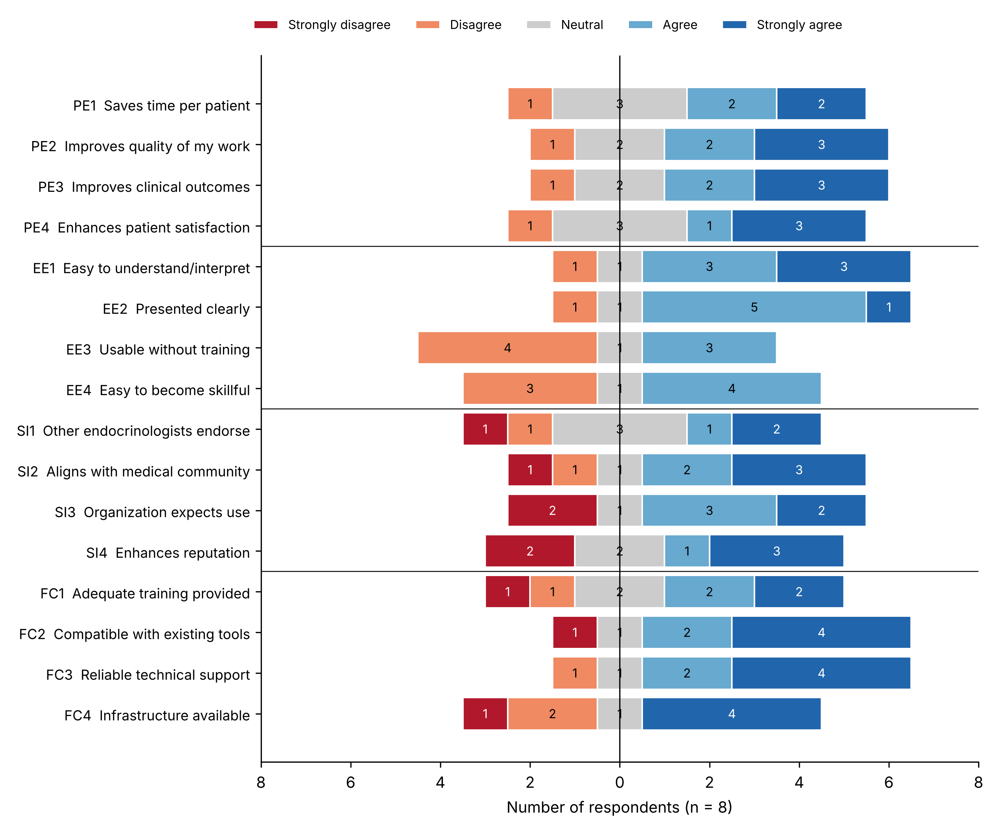

Integrated Diabetes
Report
A consolidated view of glucose patterns, treatment, and daily measures to support a clearer understanding of diabetes data.
Glucose
Continuous glucose monitoring, glucose patterns and standardized metrics.
Treatment
Insulin therapy and related treatment information.
Daily measures
Carbohydrate intake and physical activity data.
Clinical context
Additional information needed to interpret monitoring data.
Diabetes information, together in one view.
The IDR is a compact, two-page summary that integrates continuous glucose monitoring (CGM), insulin, carbohydrate intake, and physical activity. Glucose is summarized across five consensus ranges: below 3.0, 3.0–3.8, 3.9–10.0, 10.1–13.9, and above 13.9 mmol/L. Its 24-hour glucose percentile profile represents the 5th, 25th, 50th, 75th, and 95th glucose percentiles in 15-minute time-of-day bins. Mean carbohydrate intake, steps, and exercise minutes add daily context. Basal, meal-bolus, and correction-bolus insulin doses are shown on the same 24-hour time axis; a separate insulin profile compares seven formula-derived indices with values calculated from recorded doses.
Inside the report.
Glucose and insulin information brought together in the IDR.


About the example shown
The figures show one anonymised patient over a 14-day period in February 2023, generated from real data in the Diani telemedicine platform and used with permission under the ethics approval of the study. Only an internal study identifier is displayed. Diabetes type, diabetes duration, date of birth and treating physician are not stored in the platform and appear as manual input fields.
This is the report version revised after the expert evaluation described below. The design published in the article referenced at the end of this page is the earlier version.
From platform data to a printed report.
The report is generated automatically, with no manual data entry.
The IDR is produced by a web application written in R. A clinician signs in with their own account on the Diani telemedicine platform, enters the patient identifier, the reporting period and the body weight, and may adjust the clinical parameters used for the calculated insulin values. The application reads the data in real time from the platform's interface, generates the report, displays it, and offers it for download as HTML or PDF. Both versions share one print layout, so the report always prints on two A4 pages.
Glucose values come from continuous glucose monitoring, insulin doses and carbohydrate intake from the patient's diary entries, and step counts from a connected activity tracker. Information that the platform does not hold — diabetes type, diabetes duration, date of birth, treating physician and complications — is entered by the clinician and marked in the report as manual input. The application runs as a container on a server inside the clinical network; patient data, generated reports and credentials are never stored in the source repository or the container image.
What the parameters mean.
Seven indices summarise how insulin is distributed across the day.
Each parameter appears twice in the report. The calculated value follows published dosing formulas and serves as a reference; the real value is derived from the doses the patient actually recorded. Comparing the two shows where recorded treatment departs from the formula-based expectation.
| Code | Parameter | Unit | Meaning |
|---|---|---|---|
| TAID | Total average insulin dose | IU/day | All insulin given per day, basal plus bolus. |
| ABaD | Average basal dose | IU/day | Long-acting background insulin per day. |
| ABoD | Average bolus dose | IU/day | Meal and correction insulin per day. |
| ICR | Insulin-to-carbohydrate ratio | g/IU | Grams of carbohydrate covered by one unit of insulin. |
| CD | Correction dose | IU/day | Insulin given per day to bring glucose back to target. |
| ICF | Insulin correction factor | mmol/L per IU | Expected fall in glucose after one unit of insulin. |
| IDF | Insulin dose for food | IU/day | Insulin given per day to cover carbohydrate intake. |
The insulin correction factor is reported only when at least five isolated correction boluses are available in the period, so that the value rests on enough observations. Where data are insufficient, the report states this instead of showing a number.
Assessed by diabetes experts.
Eight experts rated the report and their comments shaped the current version.
Eight experts — six diabetologists, one general physician and one researcher, all with previous experience of telemedicine diabetes reports — assessed the report between October 2025 and March 2026. The questionnaire was based on the Unified Theory of Acceptance and Use of Technology (UTAUT) and covered four constructs: performance expectancy, effort expectancy, social influence and facilitating conditions.
All four construct scores were above the neutral midpoint of the scale, although no construct differed significantly from neutral. For performance expectancy, facilitating conditions and effort expectancy the effect sizes were large, indicating a consistent positive tendency that this small sample could not confirm statistically. For social influence the effect was small, reflecting divided opinions. The item most often disagreed with was the statement that the report can be used without additional training, and two experienced respondents judged the report to add little over the reports they already use. The written comments were assessed for relevance and feasibility and then used to revise the report: the minimum and maximum glucose with their date and time were added, abbreviations were given their full names and units, insulin was split into basal, meal bolus and correction bolus by time of day, calculated values were kept only as reference values alongside explanatory data notes, and the fonts and colours were adjusted for readability.

A paper describing the expert evaluation and the implementation of the revised report is in preparation.
What the experts were asked.
The full instrument, published here for transparency.
The questionnaire had three parts: six background questions, the sixteen statements below, each answered on a five-point agreement scale, and four open questions. It was distributed as an online form. Data collection ran from October 2025 to March 2026 and is closed; the form is no longer open for responses.
| Construct | Code | Statement |
|---|---|---|
| Performance expectancy (PE) | PE1 | The proposed report can decrease the time needed for each patient, leading to more patients. |
| PE2 | Using the proposed report improves the quality of the work I do. | |
| PE3 | Using this proposed report will improve clinical outcomes for my patients. | |
| PE4 | Using this report will enhance my patient satisfaction in the process of treatment. | |
| Effort expectancy (EE) | EE1 | I find the report easy to understand and interpret. |
| EE2 | The information in the report is presented clearly and straightforwardly. | |
| EE3 | I feel confident using the report without additional training or support. | |
| EE4 | It would be easy for me to become skillful at using the report. | |
| Social influence (SI) | SI1 | Other endocrinologists think I should use this report. |
| SI2 | Using this report aligns with the expectations of the medical community. | |
| SI3 | The healthcare organization I work for expects me to use tools like this report for patient management. | |
| SI4 | Using this report would enhance my professional reputation among peers. | |
| Facilitating conditions (FC) | FC1 | I believe adequate training would be provided to help me understand and use this report effectively. |
| FC2 | This report seems compatible with the existing tools or systems I use for diabetes management. | |
| FC3 | If implemented, I would expect reliable technical support for using this report. | |
| FC4 | I believe the necessary infrastructure (e.g., software, devices) would be available to use this report effectively. |
Open questions. Each section of the report had its own free-text question:
- What is your opinion about the “Glucose Statistics” section? We would appreciate your suggestions and comments on how this part could be improved.
- What is your opinion about the “Medicine” section? We would appreciate your suggestions and comments on how this part could be improved.
- What is your opinion about the “Insulin Profile” section? We would appreciate your suggestions and comments on how this part could be improved.
- What is your overall opinion about the “New Report”? We would appreciate your suggestions and comments on how this part could be improved.
The second open question referred to a section that was later replaced by the diabetes complications section, so those answers are interpreted with caution.
Article reference.
Publication describing the Integrated Diabetes Report.
-
Aldaghi T, Bem R, Muzik J. Enhancing diabetes monitoring systems’ reports: A novel integrated diabetes report (IDR). International Journal of Medical Informatics. 2026;209:106288. doi:10.1016/j.ijmedinf.2026.106288.
Original article introducing the report.
Who made the IDR.
Research work, openly documented.
Design and development
The Integrated Diabetes Report was designed and developed by Tahmineh Aldaghi, Institute of Biophysics and Informatics, First Faculty of Medicine, Charles University, Prague, as part of doctoral research on diabetes monitoring and telemedicine reporting. The published design article was written with Robert Bém and Jan Mužík.
Implementation
The report is implemented in the Diani telemedicine platform, which collects continuous glucose monitoring, diary and activity-tracker data from connected sources. The application was deployed on a Diani test server in cooperation with the platform team.
Status and intended use
The IDR is a research prototype, developed and evaluated for scientific purposes. It is not a certified medical device and must not be used for diagnosis, for treatment decisions, or for any other clinical purpose.
The calculated insulin values shown in the report are reference values obtained from published formulas. They are not dosing recommendations, and any treatment decision remains with the treating physician.